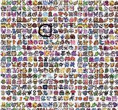

Gyarados
 De: La Frikipedia, la enciclopedia extremadamente seria.
De: La Frikipedia, la enciclopedia extremadamente seria.
| De la serie bichos dentro de bolas:
|
| Gyarados
|
|
|
| Nombre
|
Gyarados
|
| Especie
|
Pokémon
|
| Apariencia
|
Serpiente de mar gigante y azul
|
| Hábitat natural
|
hagua
|
| Localización
|
Oceanos, mares, rios o charcos
|
| Tipo
|
 
|
| Habilidad
|
Hiperrayo
|
| Pokemonización
|
Ya está pokemonizado
|
| Número
|
Muchos azules y uno rojo
|
Gyarados es una serpiente de mar MUY peligrosa que se hizo famosa en la serie de Televisión: Pokémon.
Tipos de Gyarados
Gyarados azul
 Hemos encontrado un Gyarados azul.
También llamado "Gyarados normal y corriente".
Puedes conseguirlo simplemente entrenando a un Magikarp para que evolucione o comprándolo en el Eroski.
Gyarados rojo menstruacion
Este tipo de Gyarados es único, pero puedes atraparlo fácilmente o puedes crearlo si tienes uno azul.
- Para atraparlo tienes que ir al "Lago de la Furia" y luchar contra él. Ten cuidado porque está en el Lv.50 y tiene ataques bastante potentes, entre ellos el
pollazo y el hiperrayo. (Truco para atraparlo más fácil: Guarda antes de enfrentarte a él).
- Para crearlo tienes que enviar ondas de radio al cerebro de uno azul durante 25 horas al día todos los días de un febrero bisiesto.
Ataques de Gyarados
- Furia Dragón.
- Hiperrayo.
- Salpicadura (Heredado de Magikarp).
- Llamarada (Solo el Gyarados de Misty).
¿Sabías qué...
- ...el Gyarados de Misty puede usar la MT35 lanzallamas?
- ...Gyarados es la evolución de Magikarp?
- ..Gyarados no puede cerrar la boca?
- ...Gyarados
no tiene veneno en sus colmillos?
- ...el Gyarados rojo es rojo porque está contaminado acústicamente por una señal de radio enviada por el Team Rocket?
- ...Lance tiene uno?
- ...un Gyarados te hace
pajas feliz?
- ...Milotic es su contraparte?
- ...el color de Gyarados proviene del pantallazo azul de la muerte?
- ...
- ...Gyarados en realidad proviene de pornolandia?
- ...en realidad se llamaba Gayrados pero se censuró?
- ...su evolución es Pikachu?
- ...Gyarados es tipo agua-volador pero no vuela una mierda?
- ...es ese tipo porque a los creadores les dio pereza cambiárselo a agua-dragón cuando inventaron este último?
Autor(es):
- Fordus
- Totovieja
- Dark temptation
- Paround
- Kevrochi
- Harry El del Pote
- Katt Monroe11
- Rarutox2
- El kyozx
- Groveh
Frikipedia 2005-2016, Licencia
GFDL 1.2 - Extraído por FrikiLeaks